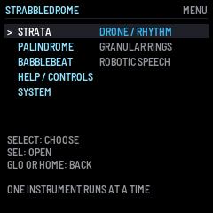

STRABBLEDROME
STRATA, PALINDROME and BabbleBeat in one firmware, behind one menu. Press GLO, turn SELECT, press SEL. One instrument runs at a time, and each plays exactly as it does by itself.

Switching
- GLO opens the menu, from anywhere.
- SELECT chooses; SEL opens it. The instrument starts afresh.
- GLO or HOME goes back without changing anything.
- HELP / CONTROLS in the menu shows the running instrument's own button guide.
Play in the browser · Manual: switching between the three
Preview, not released. There is no installer yet: it builds for the FM-1 and passes its simulator tests, but has not run on a real one. To install an instrument today, use STRATA, PALINDROME or BabbleBeat by itself.
Source and plan (MPL-2.0). Built on fm1-base by Charles Vestal and felucca-bsp, from Felucca by Leo Kuroshita (Hügelton Instruments). Not affiliated with M-VAVE.